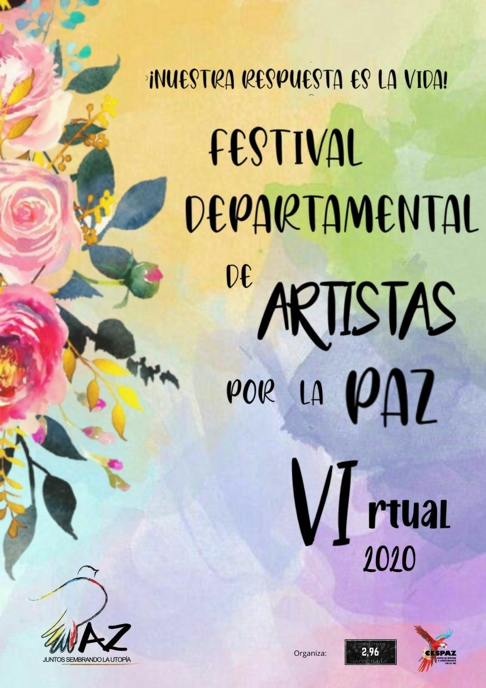
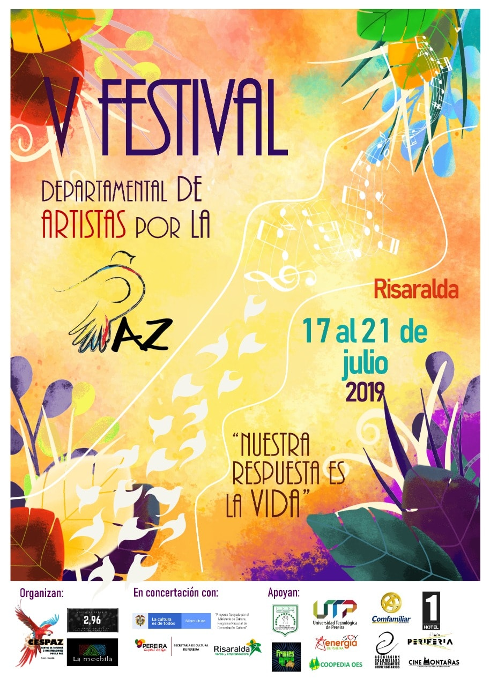
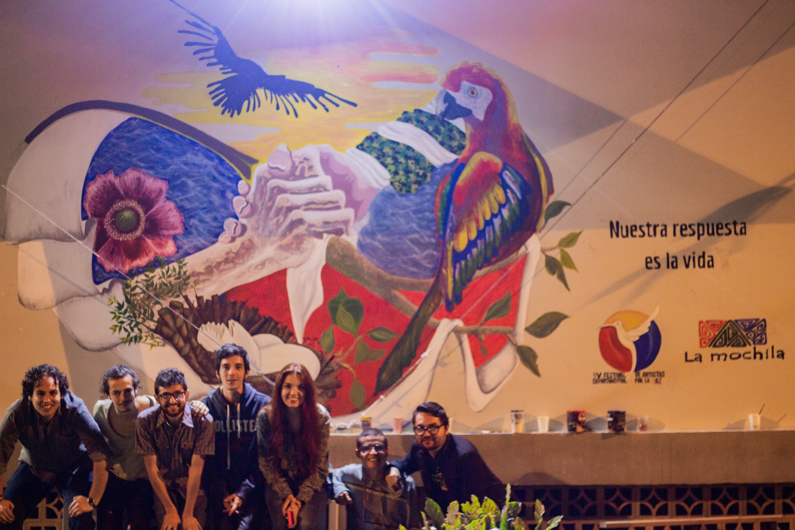
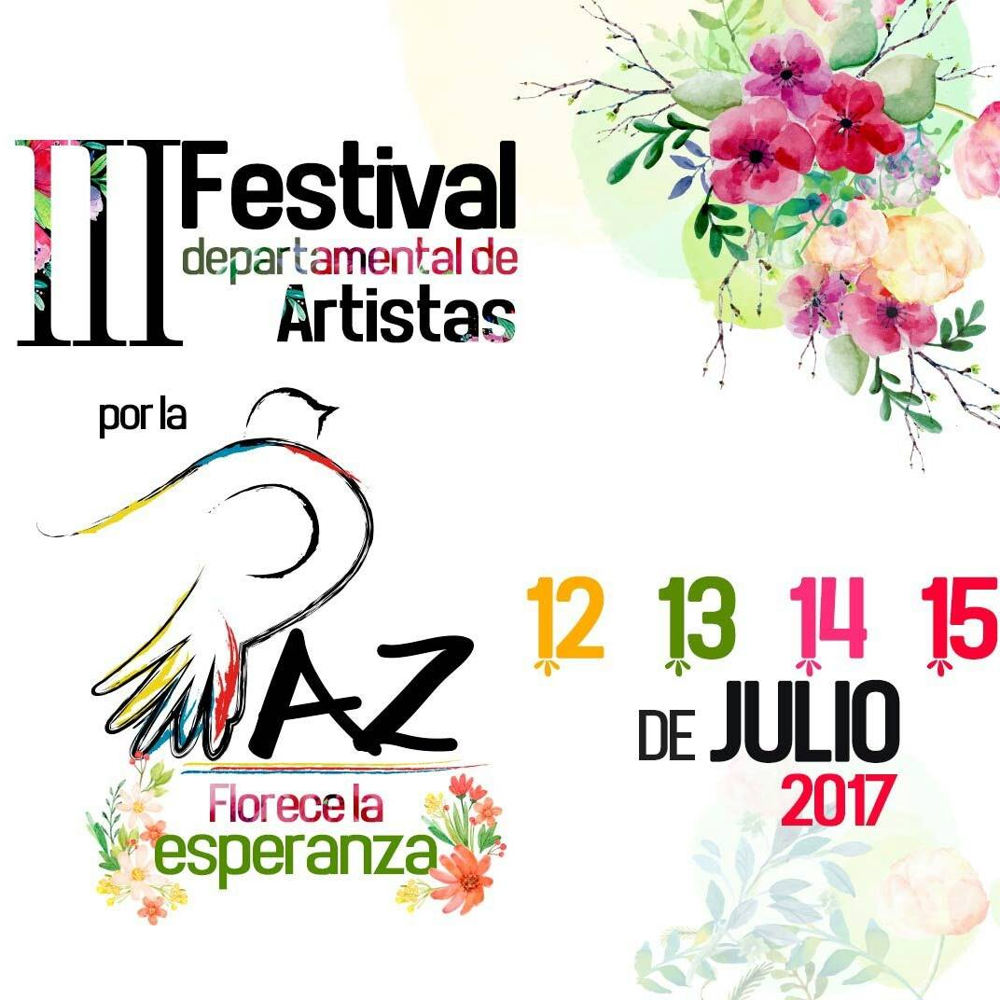
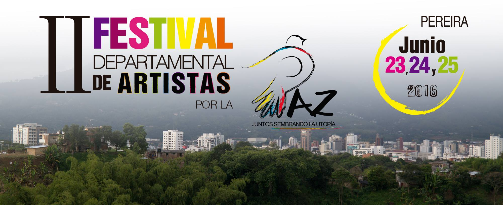
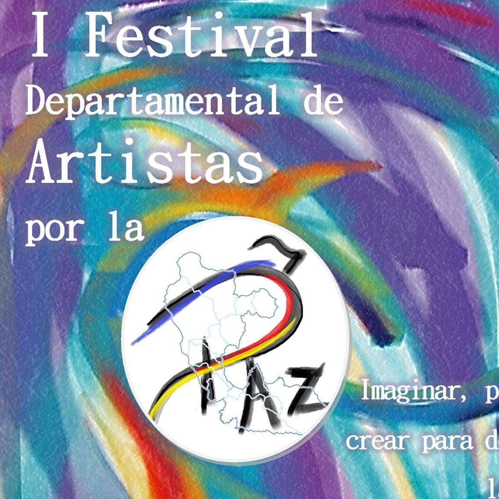

FESTIVALES.
Festival Departamental de Artistas por la Paz
El Festival Departamental de Artistas por la Paz, en definitiva, es un esfuerzo denodado por contribuir a la construcción de paz a través de los recursos que ofrecen el arte y la cultura y, así, generar procesos de transformación que fortalezcan el tejido social y se conviertan en alternativas para la construcción de un país más justo, igualitario, diverso, plural y tolerante.
VI
Festival de Artistas por la Paz.
VI Festival Departamental de Artistas por la Paz.
¡Festival Departamental de Artistas por la Paz!
Queremos presentar nuestro flayer oficial correspondiente a la versión VIrtual de #ElFestiEnCasa.
El Fedearpaz nace hace hace 6 años con el fin de apostarle a la construcción de paz en nuestro país a través de la música, poesía, el arte y la cultura en general. Las condiciones actuales impiden que realicemos nuestras actividades de forma presencial.
La pandemia ha puesto en evidencia las desigualdades de nuestro país, la violencia contra firmantes del acuerdo, la violencia contra la mujer, entre otros ¡Ahora es cuando el llamado al fin de la violencia debe hacerse con fuerza!
Les invitamos a qué en conjunto, construyamos paz. Prontamente estaremos publicando nuestro evento de apertura y la agenda que tendremos.
Festival Departamental de Artistas por la PAZ ¡Nuestra respuesta es la vida!
 Nayibe Rivera.
Coordinadora VI Festival Departamental de Artistas por la paz.

V
Festival de Artistas por la Paz.
V Festival Departamental de Artistas por la Paz.
El Festival Departamental de Artistas por la Paz se ha constituido como unos de los espacios de Paz reconocidos en la región , continua siendo un esfuerzo de artistas, jóvenes y lideres por lograr un país donde el lenguaje sea la reconciliación, donde las diferencias se diriman con propuestas y con diálogo, este esfuerzo ha brindado frutos, para esta quinta versión contamos con el apoyo del Ministerio de Cultura, autoridades locales y empresa privada, que han decido creer en este gran proyecto, que busca impactar a la ciudadanía.
Hoy ante un panorama no muy alentador para aquellos que realizan esfuerzos en pro de la paz, se hace mas vigente nuestro reclamo: Los jóvenes y futuras generación queremos dejar atrás la guerra y ante ella nuestra respuesta es la vida.
 Nayibe Rivera.
Coordinadora V Festival Departamental de Artistas por la paz.
IV
Festival de Artistas por la Paz.
IV Festival Departamental de Artistas por la Paz.
El Festival Departamental de Artistas por la Paz es un proyecto organizado por jóvenes artistas y gestores culturales del departamento de Risaralda(Colombia), se lleva a cabo anualmente desde el año 2015 y tiene como principal fin enviar un mensaje a la sociedad sobre la necesidad de reconciliación, esta se ha convertido en algo urgente para nuestra generación ya que con ella se pretende dar un paso al frente y avanzar para superar la violencia que ha caracterizado la historia del país, en pocas palabras es el esfuerzo de los jóvenes por procurar un país donde las diferencias se diriman con palabras, música, canto, baile y no con balas como hasta ahora se hace.
Hemos logrado llegar a nuestra cuarta versión, en compañía de artistas de diferente regiones del País que han aportado su arte en esta campaña de sensibilización, que aunque lenta ha generado en la comunidad Risaraldense el comienzo del uso de un lenguaje de Paz que hace algunos años no se creía posible.
Extendemos a todos la invitación para que se unan a esta propuesta y acompañen a aquellos que vemos en el arte una posibilidad de cambiar.
Los esperamos del 18 al 21 de julio de 2018, en el parque Olaya Herrera.
 Nayibe Rivera.
Coordinadora IV Festival Departamental de Artistas por la paz.
III
Festival de Artistas por la Paz.
III Festival Departamental de Artistas por la Paz.
El Festival Departamental de Artistas por la Paz llega a su tercera muestra en el departamento de Risaralda y convoca al eje cafetero como centro de expansión cultural y social por medio del arte y la paz.
Después de llevarse a cabo dos festivales en donde la ciudadanía ha participado de manera activa y abierta a todas las posibilidades que abre el arte desde el enfoque de la paz como construcción ciudadana, podría pensarse que el camino está trazado pero que debemos seguir luchando y abriendo espacios que medien entre el disfrute, la interacción social y el ambiente pacífico y constructor de nuevas oportunidades para la apertura a la paz.
Colombia y el eje cafetero le han abierto las puertas al Festival Departamental de Artistas por la Paz, y los artistas, como poetas tanto internacional como nacionales, dramaturgos y músicos llegan de diferentes partes del país y del mundo para ofrecerles todo su arte, que es la expresión máxima de su ser y una nueva posibilidad para la paz, un discurso emancipador, renovador de lo que significa el arte y la cultura ciudadana para el mensaje de paz que florece en el corazón de los pereiranos como una esperanza.
Sin más, se hace extensiva la invitación a participar de manera activa en el III Festival de Artistas por la Paz, dónde florece la esperanza en el mes de julio, los días 13, 14 y 15 en la ciudad de Pereira.
 Jessica Galvis.
Coordinadora III Festival Departamental de Artistas por la paz.
II
Festival de Artistas por la Paz.
II Festival Departamental de Artistas por la Paz.
Como resultado de una iniciativa de jóvenes emprendedores y algunos artistas de la región, en el año 2015 nació el Festival Departamental de Artistas por la Paz, que hoy está preparándose para llegar a Pereira con su segunda versión.
“Queremos invitar a todos los medios de comunicación, a entidades públicas y a entidades privadas para que se unan a esta causa, que busca llenar de arte las calles pereiranas”, comentó Eduardo Pulido, coordinador del Festival.
Con el actual proceso de negociación por el que atraviesa el país, El Festival Departamental de Artistas por la Paz, se erige como un escenario en el que confluyen propuestas artísticas, académicas, políticas y sociales, todas concentradas en la creación de escenarios y reflexiones que posibiliten el alcance de la paz desde la convivencia ciudadana.
“En la primera versión del Festival Departamental de Artistas por la Paz se presentaron 25 artistas nacionales y 3 internacionales provenientes de Cuba, Barbados y Croacia”, agregó el Coordinador del evento.
De esta manera, se hace extensiva la invitación a artistas risaraldenses para que se unan al II Festival Departamental del Artistas por la Paz, para vivenciar el arte y la cultura como expresión de posibilidades y caminos de vida que enaltezcan el país y a los nuevos escenarios que ofrece el posconflicto.
 Nayibe Rivera.
Coordinadora II Festival Departamental de Artistas por la paz.
I Festival Departamental de Artistas por la Paz.
Los días 15, 16 y 17 de julio del año 2015 se realizó la primera versión del Festival Departamental de artistas por la paz en Pereira capital del departamento de Risaralda (Colombia); este primer escenario fue impulsado por numerosas organizaciones sociales y culturales de la región de las que se destacan: Cespaz, Cooeducar y el Sindicato de Educadores de Risaralda. En el festival se hicieron presentes reconocidos artistas nacionales como Julián Rodríguez (cantautor social) y Patricia Ariza (cofundadora de la Corporación Colombiana de Teatro). En los tres días del evento hubo presentaciones de grupos de teatro, música y artistas plásticos tanto del departamento como de otras latitudes del país. Especial mención tuvo la lectura de poesía que, dentro de los 21 poetas que participaron contó con tres de talla internacional: Marko Pogacar (Croacia), Jamila Medina (Cuba) y Winston Farrell (Barbados) en un acuerdo mancomunado con el Festival Internacional de Poesía de Medellín.
El Festival Departamental de Artistas por la Paz, surge por la necesidad de reivindicar el papel de los artistas en la construcción de paz en Colombia. Teniendo en cuenta el contexto histórico por el que atraviesa el país, donde las partes que han protagonizado un conflicto armado desde hace 50 años están a punto de firmar un acuerdo de paz, se hace obligatorio generar espacios de opinión y nuevas pedagogías para transformar la mentalidad de una sociedad acostumbrada al odio y a la guerra y precisamente es el arte la herramienta para demoler esta estructura descompuesta que lleva más de medio siglo no conociendo otra cosa que el sonido de las balas.
Para este año se tiene previsto continuar con el II Festival Departamental de Artistas por la Paz en el mes de julio, cuyo objetivo fundamental es respaldar los diálogos de paz de la Habana y sensibilizar a la población sobre la importancia de la reconciliación para construir un nuevo país.
Adenda: en las próximas semanas se abrirá la convocatoria para aquellas organizaciones y personas que quieran apoyar este proyecto de paz en la región.
 Nayibe Rivera.
Coordinadora I Festival Departamental de Artistas por la paz.